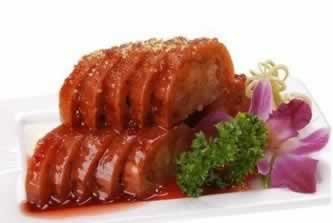
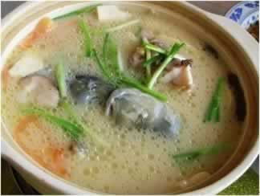

怀孕了还能吃辣椒吗？
准妈妈们在怀孕后最关注的莫过于各种饮食话题，而日常生活中的美食又何其丰富，可是，并非所有的食品都适合准妈妈食用。许多爱吃辣味的妈妈们不禁要问，怀孕后还能继续吃辣椒吗？
许多准妈妈如果发生食欲不佳，适当吃一点辣椒如能帮助恢复食欲，那么此时吃点辣椒未尝不可。可是，辣椒吃多极容易导致上火与便秘，严重了甚至还会导致痔疮。此外，辣椒还可能引起肠胃不适，所以建议准妈妈们少吃为妙。
本周推荐尝试食谱1：
蜜汁甜藕
推荐理由：鲜藕有养胃滋阴的功效；蜂蜜有润肠的作用，可缓解孕期便秘症状。
食谱原料：
藕750克、糯米150克、蜜莲子25克、蜂蜜50克、白糖200克、湿淀粉15克、蜜桂花5克；
制作方法：
1、将藕洗净，切去一端的藕节。将糯米用清水漂洗干净，浸泡2小时，捞起晾干。藕孔内灌入糯米，边灌边用筷子顺孔向内戳，使糯米充满。从中剖开，切成0．7cm厚的块，整齐摆入碗中，加入白糖125克，再放入笼屉，置旺火上蒸10分钟。
2、入笼屉上火蒸30分钟，取出，再用清水浸泡2分钟，撕去藕皮晾干，切去一端藕节。
1、将藕洗净，切去一端的藕节。将糯米用清水漂洗干净，浸泡2小时，捞起晾干。藕孔内灌入糯米，边灌边用筷子顺孔向内戳，使糯米充满。从中剖开，切成0．7cm厚的块，整齐摆入碗中，加入白糖125克，再放入笼屉，置旺火上蒸10分钟。
2、入笼屉上火蒸30分钟，取出，再用清水浸泡2分钟，撕去藕皮晾干，切去一端藕节。
3、待糖溶化取出，扣入盘内，再将炒锅置火上，放清水50克，白糖75克，蜂蜜、蜜桂花、蜜莲子烧沸，用调稀的湿淀粉勾荧，起锅浇在藕块上即可。
本周推荐尝试食谱2：
鱼头木耳汤
推荐理由：木耳滋养润泽，鱼头肉质鲜嫩，鱼汤清淡鲜美、浓香四溢，实为滋补佳品。
食谱原料：
胖头鱼头1个，木耳30克，油菜、冬瓜少许、精盐、白糖、胡椒粉、料酒、葱段、姜片、花生油各适量。
胖头鱼头1个，木耳30克，油菜、冬瓜少许、精盐、白糖、胡椒粉、料酒、葱段、姜片、花生油各适量。
制作方法：
1、将鱼头刮净鳞，去鳃片，洗净，在颈肉两面划两刀，放入盆内，抹上精盐，冬瓜切片，油菜片成薄片，木耳择洗干净备用；
2、炒锅上火，倒油少许滑锅，把鱼头沿锅边放入，煎至两面呈黄色时，烹入料酒，加盖略焖；
3、加白糖、精盐、葱段、姜片、清水，用旺火烧沸，盖上锅盖，用小火炖20分钟；
4、待鱼眼凸起，鱼皮起皱，汤汁呈乳白色而浓稠时，放入冬瓜、木耳、油菜、胡椒粉，烧沸出锅装盘即可。 1、将鱼头刮净鳞，去鳃片，洗净，在颈肉两面划两刀，放入盆内，抹上精盐，冬瓜切片，油菜片成薄片，木耳择洗干净备用；
2、炒锅上火，倒油少许滑锅，把鱼头沿锅边放入，煎至两面呈黄色时，烹入料酒，加盖略焖；
3、加白糖、精盐、葱段、姜片、清水，用旺火烧沸，盖上锅盖，用小火炖20分钟；